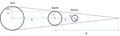

From Wikipedia, the free encyclopedia
Original file (874 × 263 pixels, file size: 36 KB, MIME type: image/png )
Summary
Licensing
Public domain Public domain false false
I, the copyright holder of this work, release this work into the public domain In some countries this may not be legally possible; if so: I grant anyone the right to use this work for any purpose , without any conditions, unless such conditions are required by law.
English Add a one-line explanation of what this file represents
creator<\/a>"}},"text\/plain":{"en":{"":"creator"}}},"{\"value\":{\"entity-type\":\"property\",\"numeric-id\":2093,\"id\":\"P2093\"},\"type\":\"wikibase-entityid\"}":{"text\/html":{"en":{"":"
author name string<\/a>"}},"text\/plain":{"en":{"":"author name string"}}},"{\"value\":\"Andonee\",\"type\":\"string\"}":{"text\/html":{"en":{"P2093":"Andonee","P4174":" Andonee<\/a>"}},"text\/plain":{"en":{"P2093":"Andonee","P4174":"Andonee"}}},"{\"value\":{\"entity-type\":\"property\",\"numeric-id\":4174,\"id\":\"P4174\"},\"type\":\"wikibase-entityid\"}":{"text\/html":{"en":{"":" Wikimedia username<\/a>"}},"text\/plain":{"en":{"":"Wikimedia username"}}}}" class="wbmi-entityview-statementsGroup wbmi-entityview-statementsGroup-P170 oo-ui-layout oo-ui-panelLayout oo-ui-panelLayout-framed"> media type<\/a>"}},"text\/plain":{"en":{"":"media type"}}},"{\"value\":\"image\\\/png\",\"type\":\"string\"}":{"text\/html":{"en":{"P1163":"image\/png"}},"text\/plain":{"en":{"P1163":"image\/png"}}}}" class="wbmi-entityview-statementsGroup wbmi-entityview-statementsGroup-P1163 oo-ui-layout oo-ui-panelLayout oo-ui-panelLayout-framed">
checksum<\/a>"}},"text\/plain":{"en":{"":"checksum"}}},"{\"value\":\"ee90f007cb8e150d8644b612ed2fe97e472b7fec\",\"type\":\"string\"}":{"text\/html":{"en":{"P4092":"ee90f007cb8e150d8644b612ed2fe97e472b7fec"}},"text\/plain":{"en":{"P4092":"ee90f007cb8e150d8644b612ed2fe97e472b7fec"}}},"{\"value\":{\"entity-type\":\"property\",\"numeric-id\":459,\"id\":\"P459\"},\"type\":\"wikibase-entityid\"}":{"text\/html":{"en":{"":"
determination method or standard<\/a>"}},"text\/plain":{"en":{"":"determination method or standard"}}},"{\"value\":{\"entity-type\":\"item\",\"numeric-id\":13414952,\"id\":\"Q13414952\"},\"type\":\"wikibase-entityid\"}":{"text\/html":{"en":{"P459":" SHA-1<\/a>"}},"text\/plain":{"en":{"P459":"SHA-1"}}}}" class="wbmi-entityview-statementsGroup wbmi-entityview-statementsGroup-P4092 oo-ui-layout oo-ui-panelLayout oo-ui-panelLayout-framed"> data size<\/a>"}},"text\/plain":{"en":{"":"data size"}}},"{\"value\":{\"amount\":\"+36850\",\"unit\":\"http:\\\/\\\/www.wikidata.org\\\/entity\\\/Q8799\"},\"type\":\"quantity\"}":{"text\/html":{"en":{"P3575":"36,850
byte<\/span>"}},"text\/plain":{"en":{"P3575":"36,850 byte"}}}}" class="wbmi-entityview-statementsGroup wbmi-entityview-statementsGroup-P3575 oo-ui-layout oo-ui-panelLayout oo-ui-panelLayout-framed"> height<\/a>"}},"text\/plain":{"en":{"":"height"}}},"{\"value\":{\"amount\":\"+263\",\"unit\":\"http:\\\/\\\/www.wikidata.org\\\/entity\\\/Q355198\"},\"type\":\"quantity\"}":{"text\/html":{"en":{"P2048":"263
pixel<\/span>"}},"text\/plain":{"en":{"P2048":"263 pixel"}}}}" class="wbmi-entityview-statementsGroup wbmi-entityview-statementsGroup-P2048 oo-ui-layout oo-ui-panelLayout oo-ui-panelLayout-framed"> width<\/a>"}},"text\/plain":{"en":{"":"width"}}},"{\"value\":{\"amount\":\"+874\",\"unit\":\"http:\\\/\\\/www.wikidata.org\\\/entity\\\/Q355198\"},\"type\":\"quantity\"}":{"text\/html":{"en":{"P2049":"874
pixel<\/span>"}},"text\/plain":{"en":{"P2049":"874 pixel"}}}}" class="wbmi-entityview-statementsGroup wbmi-entityview-statementsGroup-P2049 oo-ui-layout oo-ui-panelLayout oo-ui-panelLayout-framed"> File history
Click on a date/time to view the file as it appeared at that time.
Date/Time Thumbnail Dimensions User Comment current 02:38, 16 July 2010  874 × 263 (36 KB) Andonee {{Information |Description={{en|1=Aristarchus Lunar Eclipse}} |Source={{own}} |Author=Andonee |Date= |Permission= |other_versions= }}
File usage
The following page uses this file:
Global file usage
The following other wikis use this file:
Usage on de.wikipedia.org
Usage on en.wikiversity.org
Usage on fr.wikipedia.org
Usage on sh.wikipedia.org
Usage on tr.wikipedia.org
Usage on uk.wikipedia.org
Usage on zh.wikipedia.org

{kind=link}
{kind=link}
{kind=link}